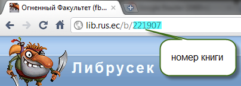

Your web browser must have JavaScript enabled in order for this application to display correctly.
Web Application Book Downloader
Чтобы скачать книгу необходимо в поле ввести номер книги, его можно получить на lib.rus.ec из адресной строки после выбора книги.
Пример:

Чтобы скачать несколько книг введите их номера через запятую.